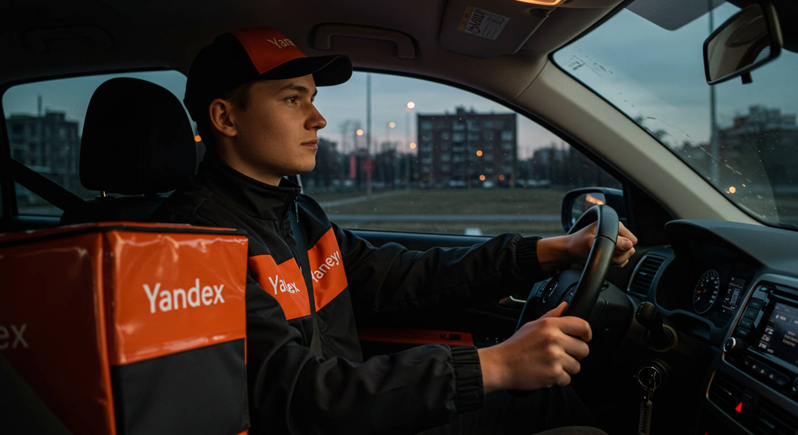
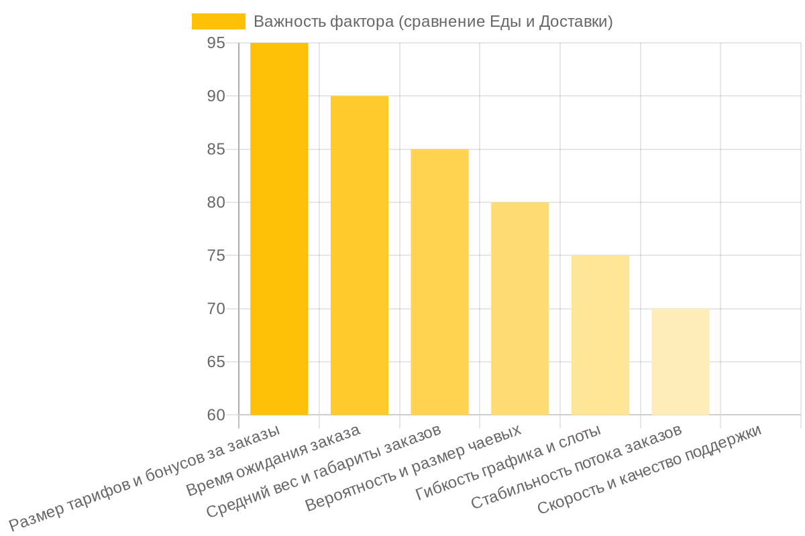
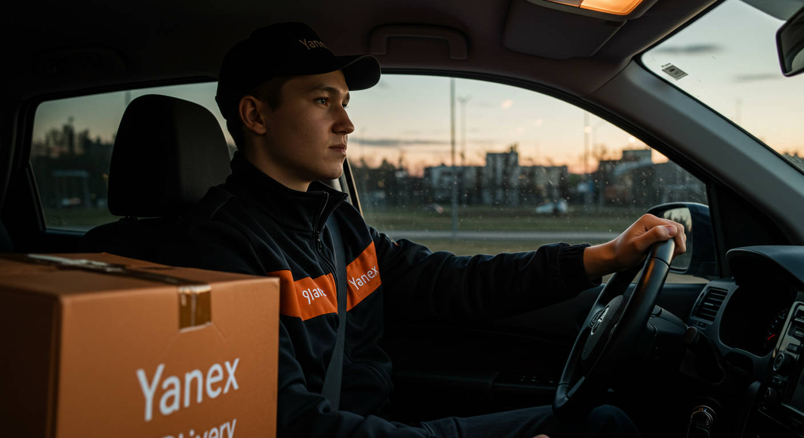
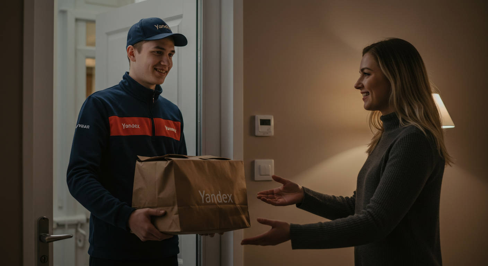

Яндекс Еда vs Яндекс Доставка: где больше платят и легче работать?

- Главное отличие: что ты будешь возить?
- Сравниваем по-честному: Еда vs. Доставка в цифрах и фактах
- Пеший, вело или авто? Какой курьер где больше заработает
- Таблица «Миф vs. Реальность»: Что тебе не расскажут на собеседовании
- Подводные камни и штрафы: чего опасаться новичку
- Инструментарий опытного курьера: что взять с собой на смену
- Кому эта работа точно НЕ подойдет?
- Как начать: пошаговый план для новичка
- Заключение: Так что же выбрать, Еду или Доставку?
- FAQ: Короткие ответы на главные вопросы
Все города
Здорово, коллега! Меня зовут Алексей. Семь лет назад я, как и ты сейчас, искал подработку и от безысходности сел за руль курьером в Яндексе. Думал, временно, а в итоге это стало моей основной работой, и я даже дорос до своего небольшого таксопарка. Так что я видел эту кухню со всех сторон: и как боец «в полях», и как организатор.
Эта статья — часть моего большого разбора в рубрике «Виды работы и сервисы», где я делюсь опытом без прикрас. Сегодня мы разберем главный вопрос, который мучает каждого новичка: Яндекс Еда или Яндекс Доставка? Куда сунуться, чтобы не просто выжить, а нормально зарабатывать, и где меньше нервотрепки. Поехали, расскажу все как есть.
Обновлено: Август 2025
Главное отличие: что ты будешь возить?
Первое, что нужно понять: это два принципиально разных типа работы, хоть и проходят через одно приложение — Яндекс Про. Разница не в цвете формы, а в самой сути заказов.
- Яндекс Еда — это всегда работа с едой. Твои точки — рестораны, кафе, магазины. Твоя задача — максимально быстро доставить горячий (или холодный) заказ голодному клиенту. Здесь все крутится вокруг скорости и термокороба.
- Яндекс Доставка — это городская логистика. Ты возишь все, что угодно: документы из офиса, забытые ключи, покупки из магазина, посылку для мамы, цветы. Здесь меньше спешки с таймерами, но больше разнообразия в маршрутах и грузах.
Этот один пункт уже определяет 90% твоей будущей работы: от уровня стресса до среднего чека. Кстати, есть еще и третий игрок в этой вселенной — работа яндекс лавка, но это совсем другая история со своей спецификой дарксторов, о ней я рассказывал отдельно.

Сравниваем по-честному: Еда vs. Доставка в цифрах и фактах
Давай без рекламной шелухи, чисто по делу. Сравним оба сервиса по самым важным для курьера пунктам.
Доход: где реально больше денег?
Это самый главный вопрос. Ответ: заработать можно и там, и там, но структура дохода разная.
- Яндекс Еда:
- Плюсы: Больше коротких заказов в час пик (обед, ужин). Выше вероятность получить чаевые (голодные люди щедрее). Часто бывают повышенные тарифы в «фиолетовых зонах» (зоны высокого спроса) и бонусы за выполнение определенного количества заказов.
- Минусы: Заработок сильно зависит от времени суток. Днем можно сидеть без дела. Пробеги обычно короткие, поэтому оплата за километр не так заметна.
- Яндекс Доставка:
- Плюсы: Более стабильный поток заказов в течение всего дня (офисы работают с утра до вечера). Часто бывают более дорогие «длинные» заказы через весь город. Есть опции «от двери до двери», которые оплачиваются дополнительно.
- Минусы: Чаевые — большая редкость. Бонусы и гарантии дохода обычно скромнее, чем в Еде в пиковые часы.
Вывод: В Еде можно сорвать куш за 3-4 часа вечером, но в остальное время доход ниже. Доставка дает более стабильный, но «ровный» заработок в течение дня.
Сложность и темп работы
Здесь различия колоссальные.
- Яндекс Еда: Это спринт. У тебя есть жесткий таймер на взятие заказа в ресторане и на доставку клиенту. Часто приходится ждать, пока заказ приготовят, а таймер тикает. Работа нервная, требует максимальной концентрации. Заказы, как правило, не тяжелые (пакеты с едой), но требуют аккуратности.
- Яндекс Доставка: Это марафон. Таймеры более щадящие. Ты можешь возить как конверт с документами, так и 5-литровую баклажку воды или запчасть для машины. Нужно быть готовым к разным габаритам и весу. Меньше стресса из-за времени, но больше непредсказуемости.
Требования и гибкость графика
- Яндекс Еда: Обязателен термокороб (без него не дадут заказы из ресторанов). Часто нужно работать в плановых слотах — это заранее забронированные часы работы в определенном районе. Это дает гарантию минимального дохода, но снижает гибкость. Есть требования к внешнему виду (брендированная одежда).
- Яндекс Доставка: Термокороб нужен реже (но с ним дают больше заказов, включая доставку из магазинов). Полностью свободный график — выходишь на линию, когда хочешь. Никаких слотов. Требований к одежде нет.

Пеший, вело или авто? Какой курьер где больше заработает
А вот теперь самое интересное. Выбор сервиса напрямую зависит от твоего «транспорта». Нельзя просто сказать, что Еда лучше Доставки, не зная, как ты будешь передвигаться.
Пеший курьер
Идеальный выбор — Яндекс Еда в центре города или густонаселенном спальном районе. Заказы здесь на короткие дистанции (1-2 км), много ресторанов рядом. В Доставке пешком делать почти нечего — заказы могут прилететь на 3-5 км, пешком это невыгодно и долго.
Велокурьер
Универсальный солдат, но с уклоном в Еду. На велосипеде ты покрываешь большие расстояния, чем пешком, и легко объезжаешь пробки. Это позволяет работать в Еде на более широком радиусе. В Доставке тоже можно, но будь готов, что иногда придется тащить на себе неудобный груз.

Автокурьер
Здесь выбор сложнее и зависит от твоих целей.
- Если хочешь работать по вечерам и в выходные, активно катаясь по своему району, — Яндекс Еда. Короткие поездки, но их много. Главная проблема — парковка у ресторанов и подъездов.
- Если ты готов к дальним поездкам и хочешь стабильный поток на весь день — Яндекс Доставка. Здесь ты — настоящий логист. Заказы могут быть из одного конца города в другой. Доход за один такой заказ выше, но и расход бензина и амортизация машины больше.
Совет от Алексея: Если у тебя универсал или хэтчбек, смело иди в Доставку. Возможность возить габаритные вещи даст тебе доступ к более дорогим заказам, которые недоступны седанам.
Таблица «Миф vs. Реальность»: Что тебе не расскажут на собеседовании
В интернете полно сказок о работе курьером. Давай я развею самые популярные из них.
| Популярный миф | Как на самом деле (суровая правда от Алексея) |
|---|---|
| Можно зарабатывать 100 000 ₽ в месяц, работая по 4 часа в день. | Теоретически да, если это 4 часа в новогоднюю ночь в центре Москвы. В реальности 100к+ — это работа по 10-12 часов 6 дней в неделю, с высоким рейтингом и приоритетом, в крупном городе. И это «грязными», без учета расходов. |
| Работа курьером — это легко, просто катаешься и слушаешь музыку. | Это постоянный стресс. Ты следишь за навигатором, таймерами, зарядом телефона, ищешь парковку, общаешься с поддержкой, ждешь заказы, таскаешь сумку. Музыка — это роскошь на редких длинных и спокойных заказах в Доставке. |
| Яндекс всегда на стороне клиента. | Яндекс на стороне своего бизнеса и репутации. Если косяк очевидно твой (опоздал, пролил суп, нахамил) — накажут тебя, вплоть до блокировки. Если ситуация спорная, будут разбираться. Всегда делай фото заказа перед отправкой и в момент передачи. |
Подводные камни и штрафы: чего опасаться новичку
Потерять деньги здесь проще, чем заработать. Вот грабли, на которые наступают 9 из 10 новичков:
- Низкий рейтинг. Твой рейтинг в Яндекс Про — это всё. Он влияет на приоритет при распределении заказов. Низкий рейтинг = мало заказов или только самые невыгодные. Его портят опоздания, жалобы клиентов и отмены заказов с твоей стороны.
- Штрафы за отказ. Пропустил или отменил несколько заказов подряд — падает показатель «активность», и тебе могут временно ограничить доступ к сервису.
- Термокороб. Даже если ты в Доставке, купи его. Без фотоконтроля короба раз в несколько дней тебе просто не будут давать самые «жирные» заказы из продуктовых магазинов.
- Амортизация авто. Если ты на машине, считай не только бензин. Каждые 100 км по городу — это износ тормозов, подвески, масла. Заложи в свой «доход» хотя бы 3-5 рублей с километра на будущий ремонт. Иначе через полгода работы «в плюс» ты получишь счет на 50 000 ₽ в автосервисе.
Инструментарий опытного курьера: что взять с собой на смену
Кроме смартфона и термокороба, вот мой личный джентльменский набор, который не раз меня выручал:
- Мощный Power Bank (минимум на 20 000 mAh). Телефон с включенным навигатором и Яндекс Про садится за 3-4 часа. Без него ты — труп.
- Держатель для телефона. Для авто и вело — обязательно. Смотреть в навигатор на коленке — прямой путь к аварии.
- Бутылка с водой и перекус. Бананы, орехи, батончики. Поверь, времени на полноценный обед у тебя не будет.
- Влажные и сухие салфетки. Протереть руки, убрать случайное пятно с короба, вытереть пролитый кофе.
- Для велосипедиста: Запасная камера, насос и мультитул.
- Для автокурьера: Автомобильная зарядка, тряпка для протирки фар и номеров.

Кому эта работа точно НЕ подойдет?
Буду честен, эта работа не для всех. Тебе здесь будет плохо, если ты:
- Нетерпеливый и нервный. Ожидание в ресторане, пробки, тупящий навигатор, капризные клиенты — все это будет каждый день.
- Не готов к физическим нагрузкам. Даже на машине придется много ходить, подниматься по лестницам без лифта. Про пеших и велокурьеров я вообще молчу.
- Ненавидишь общаться с людьми. Как минимум «здравствуйте» и «приятного аппетита» говорить придется. Вежливость напрямую влияет на чаевые и рейтинг.
- Ищешь стабильности «с 9 до 18». Здесь твой доход зависит только от тебя, погоды, спроса и твоего рейтинга. Сегодня густо, завтра пусто.
Как начать: пошаговый план для новичка
Если я тебя не напугал и ты все еще хочешь попробовать, вот короткий план действий:
- Определись с формой работы: самозанятый или через парк-партнер. Самозанятость — это прямой договор с Яндексом, налог платишь сам (4-6%). Парк — это посредник, который берет комиссию (обычно 3-5%), но может помочь с выводом денег и решением проблем. Новичку я бы советовал начать с парка.
- Заполни анкету на сайте Яндекса. Там все просто, разберется даже ребенок.
- Скачай приложение Яндекс Про. Это твой главный рабочий инструмент. Пройди в нем небольшое обучение и тест.
- Подготовь инвентарь. Купи или возьми в аренду термокороб. Проверь свой транспорт.
- Выходи на первый заказ! Не бойся, начни с короткого слота или просто выйди на линию в своем районе в непиковое время, чтобы освоиться.
Прежде чем выходить на линию, просто открой карту своего района в приложении и посмотри, где больше ресторанов, а где — бизнес-центров и жилых кварталов. Это уже даст тебе первую подсказку, где будет больше заказов твоего профиля.
Заключение: Так что же выбрать, Еду или Доставку?
Нет однозначного ответа «этот сервис лучше». Есть тот, который лучше подходит именно тебе.
- Иди в Яндекс Еду, если ты быстрый, стрессоустойчивый, работаешь на велосипеде или пешком в оживленном районе и хочешь максимального заработка за короткое время.
- Иди в Яндекс Доставку, если у тебя есть авто, ты ценишь более спокойный темп, готов к разнообразным задачам и ищешь стабильный заработок в течение всего дня.
Мой главный совет: не слушай никого, попробуй сам. Поработай неделю в одном сервисе, неделю — в другом. Только так ты поймешь, что ближе именно тебе. Цифры в отчетах и мой опыт — это одно, а твои личные ощущения — совсем другое.
Грабли, на которые я наступил: В самом начале я потратил 4000 рублей на новый брендированный термокороб. А потом увидел на Авито точно такие же, которые продавали ребята, ушедшие из доставки, за 1500-2000 рублей в идеальном состоянии. Не повторяй моих ошибок, прежде чем покупать термокороб, проверь доски объявлений!
FAQ: Короткие ответы на главные вопросы
1. Можно ли работать в Яндекс Еде и Доставке одновременно?
Да, можно. В приложении Яндекс Про можно переключаться между тарифами. Например, утром и днем работать в Доставке, а вечером в час пик переключиться на Еду. Это самый выгодный сценарий для опытных курьеров.
2. Сколько в среднем выходит в час «чистыми»?
Очень сильно зависит от города, времени, рейтинга и транспорта. В среднем по больнице, за вычетом комиссии и примерных расходов, можно ориентироваться на 300-600 рублей в час. В Москве и Питере в удачные дни цифры могут быть и 800-1000 ₽/час.
3. Что выгоднее: самозанятость или работа через парк?
Математически самозанятость почти всегда выгоднее (налог 4-6% против комиссии парка 3-5% + 1-2% за вывод). Но парк может помочь с быстрыми выплатами (иногда ежедневными) и решением спорных вопросов с поддержкой. Для новичка парк может быть проще.
4. Нужна ли медицинская книжка?
Для Яндекс Еды медицинская книжка обязательна. Для Яндекс Доставки — нет, если ты не доставляешь заказы из продуктовых магазинов (тариф «Экспресс»). Но лучше ее сделать, это расширит количество доступных тебе заказов.
5. Что будет, если я опоздаю с заказом?
Ничего страшного, если это единичный случай из-за объективных причин (пробка, долго готовили в ресторане). Главное — сообщить об этом в поддержку. Если опоздания станут систематическими, это негативно скажется на твоем рейтинге, и заказов станет меньше.